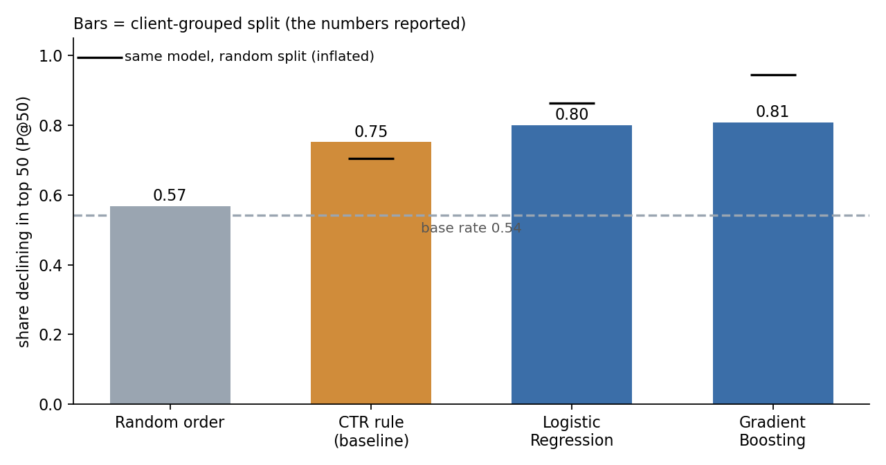
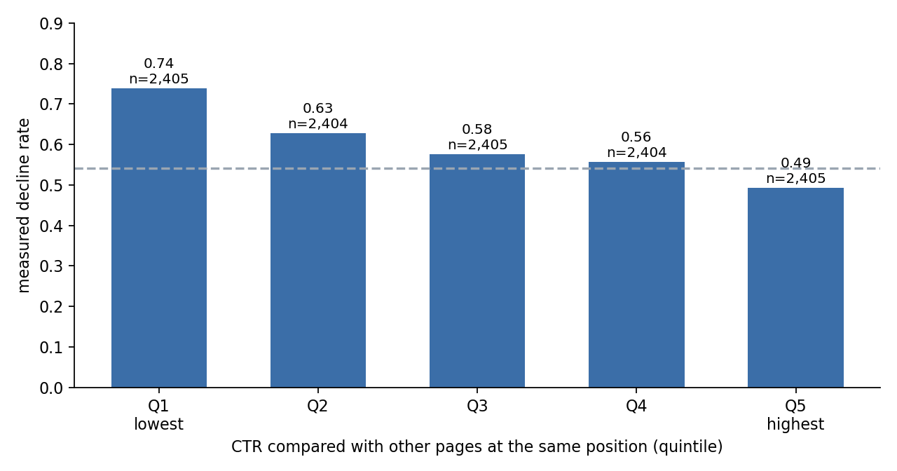
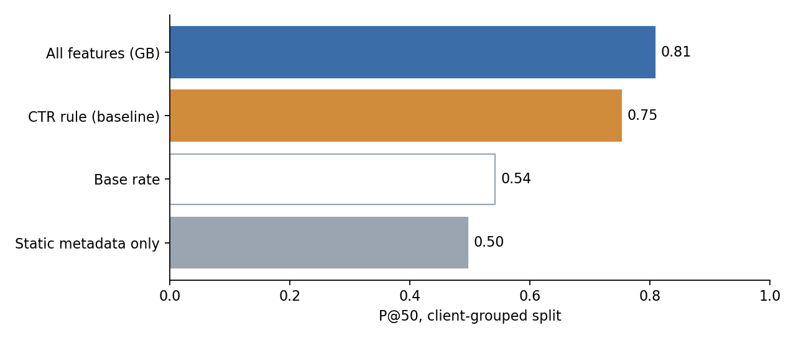
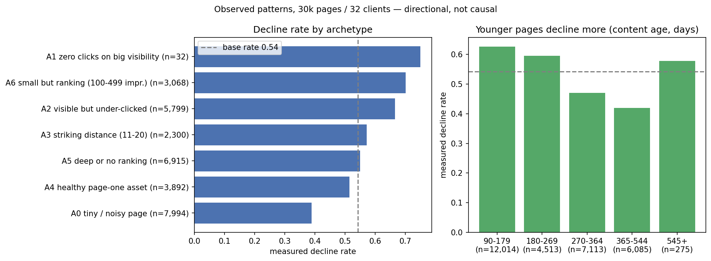

Which pages should an editor refresh first? A client-grouped ranking study on 30,000 pages
Abstract
This is a case study of a real content problem at FlyRank, an AI-driven SEO and content platform: across many client sites, content teams cannot review thousands of pages at once, so which pages should be refreshed first? It uses 30,000 pseudonymized pages from 32 clients (trailing 90-day search metrics) and labels a page "declining" when its impressions fell by more than 20% between the last two 30-day windows (base rate 54%). A transparent rule (low click-through rate for a page's ranking position) was built first as the baseline, then compared with Logistic Regression and Gradient Boosting under 5-fold cross-validation grouped by client, so every client is scored by a model that never saw it. In the top 50 pages per fold, 80–81% were declining for the learned models against 75% for the rule and 57% for a random order. The traffic features overlap the label window, so the ranking describes decline already in progress rather than forecasting it, and the output is offered as decision support for a weekly human-reviewed triage list, not as an automated system.
1Introduction
Picture an editor on Monday morning with capacity for about 50 page reviews and a site of several thousand pages. Some of those pages are quietly losing search visibility; most are fine. Picking pages at random wastes roughly half of the week, because about half of the pages are not declining at all.
The decision this work supports is narrow on purpose: which pages go into this week's review batch, and what should the editor check first on each one? A wrong call has two costs. A false alarm spends editor time on a healthy page. A miss lets a visible page keep slipping.
The FlyRank case. This study comes from the Refresh lane of the FlyRank ML Internship. FlyRank manages content for many client sites, and its product already surfaces refresh candidates using hand-tuned rules. Those product scores are deliberately not in the dataset, so this work starts from the observable signals alone (search impressions, clicks, position, engagement, page age) and asks whether an honest, testable ranking can be built from evidence. The target output is the one the lane defines: a ranked weekly review queue where every page carries a score, a reason code and a suggested action.
The obvious approach is a rule of thumb such as "refresh pages older than six months". Section 4 shows why that rule does not hold in this data, and what does.
2Data
Source. The starter slice of the FlyRank ML Internship dataset: 30,000 content items (one row per page), 32 pseudonymized clients, 44 columns. Search metrics come from Google Search Console and site analytics, aggregated over a trailing 90-day window ending at export time, plus two 30-day comparison windows. The full warehouse release (about 79 million daily rows) was explored during the internship, but every model and number on this page comes from the 30,000-page slice.
Coverage. Content age 90–564 days; three content types; pages per client range from 3 to 7,008 (median 567). One client holds 23% of all pages, which matters for validation (Section 3).
Cleaning. An average position of 0 means "no data", so it was set to missing (1,205 rows). Word count is missing for 7,699 rows, all of one content type, so missingness became its own flag instead of a fill with 0. Rate columns are percentages (a CTR of 0.21 means 0.21%).
Excluded on purpose. trend_direction, trend_pct and every *_last_30d / *_prev_30d column (the label is computed from them); content_id and client_id (pseudonyms, used only for grouping); and the dataset's pre-made tier buckets (existing-system decisions). No client names, URLs or search queries appear anywhere in this work.
3Methodology
Label
A page is declining when its impressions in the last 30 days were more than 20% below the previous 30 days (trend_direction == "down"). 16,262 of 30,000 pages (54.2%) qualify. This is a proxy for "worth a refresh", not a measure of lost revenue.
Signal audit before modeling
Each candidate signal was checked with a bucket table (n printed), inside clients, and given a verdict:
| Signal / belief | Evidence | Verdict |
|---|---|---|
| Low CTR for its position → decline | lowest CTR quintile 0.74 vs highest 0.49 (n ≈ 2,400 each); holds in 14 of 17 clients | CONFIRMED |
| Older pages decay more | 90–179 days 0.63 vs 365–544 days 0.42; most clients agree | OPPOSITE |
| Thin pages (<1,200 words, visible) decay more | 0.54 vs base 0.54 (95% CI 0.43–0.64, n = 82) | FALSE |
| Stale (180+ days, visible) → decline | 16 of 17 declined, but n = 17 | MIXED |
| More impressions → more decline | jump from <10 to 10+ impressions, then flat | MIXED |
Baseline
A rule a person can read: for pages with at least 500 impressions at positions 1–20, score = CTR shortfall versus the median CTR of pages at the same position band × log10(impressions). The position medians are computed from training folds only. It uses three columns and no fitted weights.
Models and features
Logistic Regression (C = 0.5, scaled) and Histogram Gradient Boosting (depth 4, 300 iterations, min leaf 100), plus a depth-3 decision tree and a random-order floor. Features: 19 numeric (log-scaled 90-day impressions, clicks, sessions and AI-referred sessions; days with impressions or sessions; CTR; position; engagement; scroll; age; days since update; keyword volume, competition and CPC; two missingness flags) and 3 categorical (content type, intent, competition level). Pages are ranked by predicted probability.
Validation design
5-fold cross-validation grouped by client: every client sits entirely in train or entirely in test. The question it answers is the deployment question: does the ranking work on a client the model has never seen? The headline metric is precision@50 (share of the top 50 pages per test fold that were declining), always shown next to the base rate. Seed 42 throughout.
Leakage checks
- A guard stops the run if any excluded column enters the feature list.
- No single feature separates the label suspiciously well (highest single-feature ROC-AUC: 0.59).
- Harness test: adding
trend_pcton purpose sends P@50 and ROC-AUC to 1.0, so the setup would catch a leak like that. - Window check: a model on static metadata alone (Section 4, Figure 3) shows how much skill comes from the overlapping traffic windows.
4Results
Learned models beat the rule, modestly
| Method (client-grouped 5-fold) | P@50 | fold sd | ROC-AUC |
|---|---|---|---|
| Random order | 0.57 | 0.13 | 0.50 |
| CTR rule (baseline) | 0.75 | 0.09 | 0.63 |
| Logistic Regression | 0.80 | 0.10 | 0.66 |
| Gradient Boosting | 0.81 | 0.07 | 0.68 |
| Decision tree (depth 3) | 0.62 | 0.09 | 0.61 |
Both learned models put about five more declining pages into the top 50 than the rule does. The two are tied within fold-to-fold noise, so the simpler Logistic Regression is used for the playbook. The gain is uneven: Gradient Boosting wins clearly on the largest client (0.92 vs 0.66) and loses to the rule on another fold (0.76 vs 0.84).

The signal that holds: CTR for its position

What the model leans on
Permutation importance on held-out folds ranks days with impressions first, then average position and content age, followed by CTR and impressions. The top feature partly encodes whether a page can decline at all (a page with almost no visible days often has nothing to lose). Removing the day-count columns lowers P@50 only from 0.81 to 0.80, so the result does not rest on them.
Where the skill comes from

What the errors look like
Confident false alarms are pages at position ~2 with 2,000–4,800 impressions and only 3 clicks, about 140 days old. They look exactly like decaying pages but simply held steady between the two 30-day windows. Missed declines are pages with a single impression in 90 days: going from 1 impression to 0 counts as "down". Of the 3,746 pages with fewer than 10 impressions, 753 carry the "declining" label, which is label noise rather than a modeling failure.
5Limitations and honest framing
- Describes decline in progress more than it forecasts it. The features are 90-day totals that contain the label's two 30-day windows (Figure 3). A time-aware design (features from earlier days, label from later days, on the warehouse release) is the next step to test a true forecast.
- Not causal. Nothing here shows that refreshing a page causes recovery. That would need a before/after design with a matched control group or an experiment.
- One snapshot, one slice. 30,000 pages from 32 clients, content aged 90–564 days. Results may not hold for other clients, content types or periods, and fold-to-fold spread is large (sd 0.07–0.13).
- Noisy label for small pages. One impression can flip the label below about 10 impressions.
- Uneven clients. One client holds 23% of pages; a per-client cap in the playbook limits its weight in the weekly list.
- Modest gain. The learned models add about 5 points of P@50 over a three-column rule. The rule is a reasonable fallback if the model cannot be maintained.
6Ranked recommendations: the action playbook
Each page gets an archetype from transparent rules, a reason code and one action. The weekly batch is the 50 highest-priority actionable pages, at most 10 per client.
| Archetype | Reason code | Action | n | decline |
|---|---|---|---|---|
| A1 zero clicks on big visibility | possible_tracking_issue | check tracking before editing | 32 | 0.75 |
| A2 visible but under-clicked | low_ctr_for_position | rewrite title and meta | 5,799 | 0.67 |
| A3 striking distance (11–20) | near_page_one | refresh content, internal links | 2,300 | 0.57 |
| A4 healthy page-one asset | protect_page_one | light fact-check refresh | 3,892 | 0.51 |
| A5 deep or no ranking | low_visibility | deprioritize or consolidate | 6,915 | 0.55 |
| A6 small but ranking (100–499) | small_but_ranking | batch review later | 3,068 | 0.70 |
| A0 tiny / noisy (<100) | too_little_data | no action, monitor | 7,994 | 0.39 |

In priority order
- Check tracking first on zero-click pages. 38 of this week's 50 pages had no clicks in 90 days. Confirm clicks are not credited to another URL (canonical, redirect) before editing anything.
- Rewrite titles and descriptions on visible, under-clicked pages. This is the strongest signal observed (Figure 2), and the cheapest action (about 45 minutes per page).
- Look at the search results before rewriting. If ads, an AI overview or a featured snippet take the clicks, a new title will not help; skip the page.
- Do not refresh by age alone. Older pages declined less in this data, and the stale-page flag had too few cases to confirm.
- Leave tiny pages alone. Below 100 impressions the label is mostly noise and there is little traffic to recover.
Cost and value (stated assumptions). The batch costs about 34 editor-hours. In hindsight, about 39 of the 50 pages were declining, against about 30 for 50 actionable pages chosen at random. Captured click value (clicks × CPC) is only about $12, because these pages get almost no clicks; the case for acting is roughly 700,000 impressions of visibility at stake, not revenue.
Never automated
- Publishing any change without an editor reading the page.
- Deleting, noindexing or redirecting a page because of its score.
- Re-editing a page updated in the last 14 days.
- Using the score to judge writers, clients or AI providers.
- Applying the list to new clients or content types without re-validating.
Re-check triggers. Re-validate monthly with a grouped split; retrain at least quarterly or after a Google core update; fall back to the CTR rule if last month's batch hit rate drops below 0.75, or if the median CTR of visible pages shifts by more than 30%.
7Reproducibility
Everything is in the public repository github.com/begs44/flyrank-ml. Each notebook opens in Google Colab from its badge and reruns top to bottom in about a minute; the seed is fixed at 42, and results were identical under scikit-learn 1.6.1 and 1.7.2.
| Step | Notebook |
|---|---|
| Signal audit | w04_signal_audit.ipynb |
| Rule baseline | w04_baseline_score.ipynb |
| Models vs baseline | w05_model.ipynb |
| Validation and leakage audit | w06_validation_audit.ipynb |
| Action playbook | w07_action_playbook.ipynb |
| Capstone (all figures on this page) | capstone.ipynb |
The ranked queue is regenerated on every run and is not committed (data files stay out of the public repository). Metric receipts are committed in work/outputs/.
8Acknowledgments and data credit
Built on the FlyRank ML Internship dataset. Thanks to the FlyRank ML track team for the dataset, the weekly sessions and the research paper whose methods this work learned from. All client data is pseudonymized; no client names, URLs or search queries are shown.